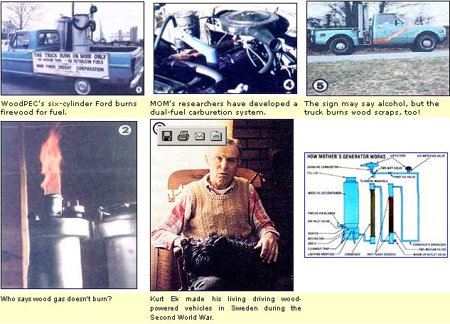

As we're sure everyone realizes, MOTHER doesn't claim to have a corner on innovation. So, when given an opportunity to show off someone else's ingenuity, we usually take it and hope that-by doing so-we provide our readers with new concepts which they can put to use in developing their own projects.
Recently, Morton Fry (of the Miles W. Fry & Son nursery) contacted our North Carolina home office and explained that he and a group of associates were working on a wood-powered energy source in which he thought we might be interested. (Regular readers may remember the Fry nursery from the "Hybrid Poplars" article in MOTHER NO. 64... see page 148 for information on ordering back issues.) And, since our researchers had been experimenting with wood gasification units, too, we took Mort up on his offer and paid a visit to the Fry family headquarters in Pennsylvania's rural Lancaster County.
Mr. Fry and about a dozen other concerned people have pooled their resources and talent to form the Wood Power Energy Corporation, a group that's dedicated to making the ligneous combustible a primary source of fuel in this nation by the turn of the century. Rather than merely promote the use of wood in its natural form, "WoodPEC" hopes to be instrumental in the development of some new and more efficient cellulose-based energy systems.
Working under a DOE/General Electric grant, one of the association's members-University of Pennsylvania biochemist Dr. E. Kendall Pye-has already been successful in converting tree-derived polysaccharide material into fermentable glucose, used for making ethanol. And the group eventually plans to get involved not only in the improvement of wood-fired steam generators and the turbines which operate from them, but also in the conversion of "timber" carbons into conventional liquid fuels, using a heat-and-catalyst process.
But for the present the big news at the Frys' Ephrata, Pennsylvania tree farm is the woodburning pickup truck that the WoodPEC folks have developed. The gasification concept used in the vehicle is, for the most part, the same as that utilized in any of the producer-gas generators pressed into service during the fuel-lean years of World War II. The Keystone Staters have, however, apparently improved on the design of the gas-producing unit itself, thus rendering it [1] more efficient than the wood-vapor generators utilized 40 years ago, and [2] more convenient, since it doesn't have to be maintained as diligently as did the original units.
Because the WoodPEC people feel that they've hit upon a truly unique arrangement, they're in the process of patenting their design ... so we've agreed not to reveal any "privileged" information at this time. We can, however, say that the 14-year-old Ford on which the gasifier's been installed doesn't run much differently from any conventionally powered vehicle with 200,000 miles on its "clock". The wellused pickup has been modified to operate on producer gas alone (with no dualfuel capability) and has been driven a total of 800 miles in that mode. Start-up time (that period between lighting the fire and actually driving away) is about ten minutes, and the rolling workhorse can attain speeds over the legal limit.
Though "timber power" admittedly isn't as c onvenient as is gasoline, it's a whole lot less expensive, since even scrap wood can be burned ... and typical fuel economy figures work out to about one mile per pound. Additionally-because they've been able to achieve higher-than-normal temperatures within the "hearth" zone of their gasifier-the "WoodPECers" find that they're extracting as much energy as possible from their fuel ... while realizing the additional benefit of minimal ash accumulation in the firebox. (Morton Fry estimates that two or three bushels of wood chunks will yield less than one teacupful of fine, white flakes.)
Now, with their transportation experiment for the most part completed, the energy-conscious researchers are busy in. vestigating a new project: using producer gas to power a stationary generator which will, they hope, not only provide electricity for part of the firm's nursery complex during periods of peak demand, but-in addition-feed energy back into the grid during "slack" spells. Meanwhile, the folks here at y(our) favorite magazine are working along similar lines, and want to incorporate a few new twists besides ... so keep watching, over the next few months, for fresh developments!
All too often humankind is, collectively, guilty of procrastination. Consider the fact that, until several years ago, few gave much thought to our dwindling fuel resources ... and that even today, with the handwriting clearly on the wall, precious little is being done to find solutions to the problem.
Well, Kurt Ek-the gentleman picturgid (with a canine companion) (it left-has already been through a similar energy crisis in his lifetime ... and he hopes people can be convinced to prepare alternatives before the situation is repeated. Kurt, you see, grew up in pre-World War II Sweden and knows from, firsthand experience the staggering effect which the sudden discontinuation of energy supplies can have upon a civilized society. Mr. Ek was kind enough to contact us and offer to share the fruits of his firsthand familiarity with the subject of wood gasification, and some of his experience-gained observations are printed here.
"In my homeland, during the 1930's, horse-drawn vehicles were well on the way out ... and-although we did use working animals in the country and on smaller farms-petrol-driven machinery handled most of the labor and transportation tasks at the time. Now you probably know what happened in 1939-40. Within that year, Sweden was blockaded and completely cut off from any source of petroleum ... and we simply didn't have a domestic supply, except for any small amounts of gasoline that might have been stored by individuals or businesses.
"Then, in the summer of 1940, a law was passed ... ordering us to stop all driving whatsoever! Every gallon of gasoline in the country belonged, from that moment on, to the government ... even the fuel in an individual citizen's automobile gas tank! Farmers couldn't get their food or milk to market, so they dumped what they couldn't use themselves. Stores were empty, while fire and police vehicles sat inoperative ... it was chaos for a while. After a bit, a rationing plan was adopted, but there obviously wasn't enough petrol to go around. So, in time, the country began to make the switch to wood gasification.
"I drove a 1936 Chevy flatbed for a living, and had to use wood chips for fuel. It wasn't as convenient as gasoline, but it got the job done and I was thankful. I figured that, under the best circumstances. I had about 75% of the power that gasoline would deliver, and only had to make minor timing changes to the engine ... though a few vehicles-including the American-made motorcycle I drove for a while-needed a compression ratio increase to use the wood gas effectively.
"Of course, the single most important fact about the switch to wood was that it kept all essential traffic moving. I really don't believe it would take much to spark a major conflict in the Middle East today, and we ought to prepare ourselves for the shortages that'd result ... while we have the chance to experiment."
We recently featured an article about an Iowa couple who beat the high price of gasoline by adapting a woodburning fuel-gas generator to their pickup truck (see MOTHER NO. 67, page 194). In the piece we mentioned that MOTHER's research crew was "hot" to build a gasification unit of their own design... and that we'd be reporting in a future issue on what we hoped would be an improved wood-fueled powerplant.
Well, the future is now, and-as sometimes happens-we have some good news end some not-so-good news. The good tidings, however, couldn't be better: Dennis Burkholder and Robyn Bryan (our resident experts on wood gas) have Indeed designed and built a producer-gas generator, which they've installed on our "old" alcohol-powered Chevy truck. The "cooker" itself seems to be working perfectly, and the fellows have even designed a dual-fuel carburetion unit which-as far as we know-is just flat unique. To date, the pickup has logged about 1,000 wood-gas miles with no problems ... and can hold its own in stop-and-go traffic, on hills, and along interstate highways.
And, as you'll probably be glad to know, the bad news isn't all that bad: You see, because we really don't feel that a 1,000-mile test period is adequate to determine the long-term effects of producer gas on an engine, we won't release any detailed construction information-in the magazine or as a set of plans-until we've had a chance to put some more highway behind us ... and check the oil for contamination, look for unwanted deposits in the fuel distribution system, and inspect the valves and seats for wear.
Furthermore, although we've tried several different filter mediums (all of which did a fine job of scrubbing solid particles from the gaseous fuel for a limited time), we're still looking for an inexpensive straining material that [1] is waterproof, so that it can maintain its integrity in a moist environment, [2] doesn't break down under prolonged use, and [3] is capable of serving as a "flame trap" in the unlikely event that a back flash should occur through the system.
So, at present-even though we feel we've taken a giant step toward developing a practical and affordable alternative to petroleum-powered transportation-we still believe that our design has room for improvement in several specific areas. And when those refinements are made, be assured that you'll be among the first to know about them!
Our converted pickup's fuel-scraps of wood usually no larger than a 6" length of 2 X 4-rests on a cone-shaped hearth that is, itself, contained within an airtight drum. A limited amount of oxygen is allowed to enter the vessel through an inlet valve ... which also incorporates the forced-air blower used to create a draft when starting the fire (once the engine is running, its vacuum provides all the draw necessary to keep the fuel burningj.
As air enters the generator, it's directed-through a series of ducts-into the combustion zone just below the hearth. The wood chunks burning in this vicinity then consume most of the oxygen in the air-creating carbon dioxide end water vapor-and drop redhot embers onto a grate near the base of the cooker. At the same time, the heat from this reaction helps to drive moisture and convertible gases from the solid fuel stored above the "ignition" area.
The C0 2 and water vapor, together with some wood tar, are then pulled through a restrictor throat just above the charcoal grate. This venturi speeds the flow of gases, then forces them through the glowing coal bad ... and it's during this "trial by fire" that the fumes are converted into the burnable vapors carbon monoxide, hydrogen, and-to a lesser extent-methane. (The final product also contains a good amount of nitrogen, some tar and ash, and a bit of unconverted carbon dioxide and moisture.)
The noncombustible nitrogen and CO 2 can remain in the fuel without causing appreciable problems ... but most of the tar, ash, and water vapor must be removed from the gas to prevent accumulation and potential engine damage. To accomplish this, the vapors are first routed through a condensing unit which precipitates the moisture ( and increases the density of the fuel charge) ... then are passed into a filter, where the finer particles are separated.
From there, the gas is piped to a manifold, which allows regulation of both the air/fuel mixture and the speed of the engine. (In addition, this distribution system allows the operator to switch back and forth between gasoline and producer gas at the pull of a lever while still providing the engine with filtered air in either fuel mode.)
|
 STAFF PHOTOS |
|
|